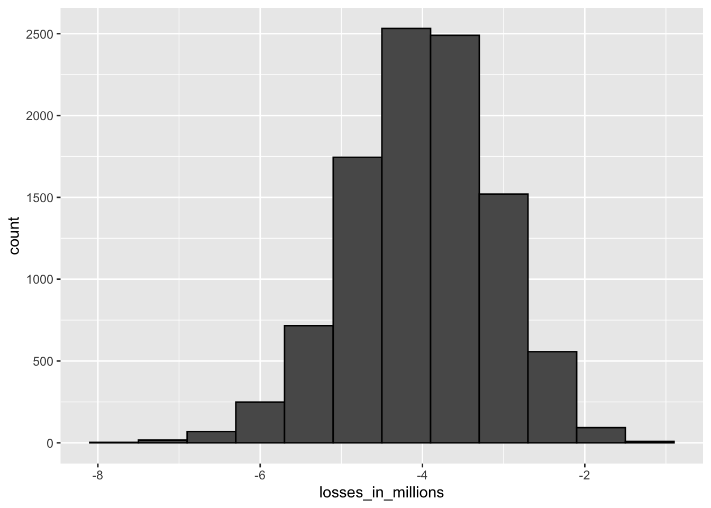
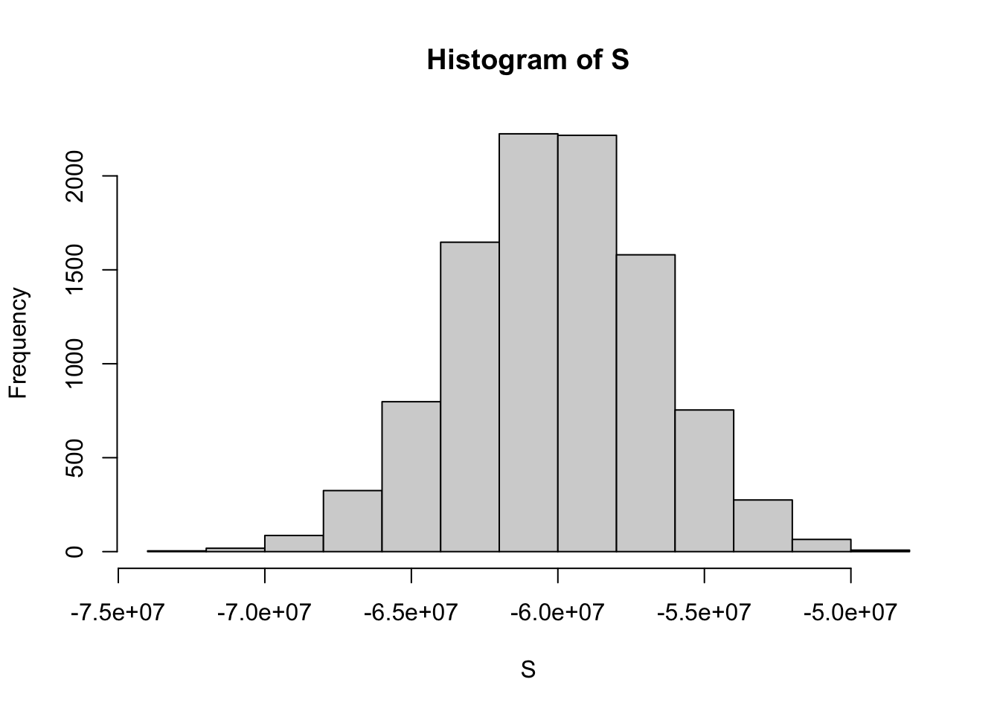

5 Section 4 Overview
Section 4 introduces you to the Big Short.
After completing Section 4, you will:
- understand the relationship between sampling models and interest rates as determined by banks.
- understand how interest rates can be set to minimize the chances of the bank losing money.
- understand how inappropriate assumptions of independence contributed to the financial meltdown of 2007.
5.1 Interest Rates Explained
The textbook for this section is available here.
Key points
- Interest rates for loans are set using the probability of loan defaults to calculate a rate that minimizes the probability of losing money.
- We can define the outcome of loans as a random variable. We can also define the sum of outcomes of many loans as a random variable.
- The Central Limit Theorem can be applied to fit a normal distribution to the sum of profits over many loans. We can use properties of the normal distribution to calculate the interest rate needed to ensure a certain probability of losing money for a given probability of default.
Code: Interest rate sampling model
n <- 1000
loss_per_foreclosure <- -200000
p <- 0.02
defaults <- sample( c(0,1), n, prob=c(1-p, p), replace = TRUE)
sum(defaults * loss_per_foreclosure)## [1] -6400000Code: Interest rate Monte Carlo simulation
B <- 10000
losses <- replicate(B, {
defaults <- sample( c(0,1), n, prob=c(1-p, p), replace = TRUE)
sum(defaults * loss_per_foreclosure)
})Code: Plotting expected losses
data.frame(losses_in_millions = losses/10^6) %>%
ggplot(aes(losses_in_millions)) +
geom_histogram(binwidth = 0.6, col = "black")
Code: Expected value and standard error of the sum of 1,000 loans
n*(p*loss_per_foreclosure + (1-p)*0) # expected value ## [1] -4e+06sqrt(n)*abs(loss_per_foreclosure)*sqrt(p*(1-p)) # standard error## [1] 885438Code: Calculating interest rates for expected value of 0
We can calculate the amount \(x\) to add to each loan so that the expected value is 0 using the equation \(lp + x(1-p) = 0\). Note that this equation is the definition of expected value given a loss per foreclosure \(l\) with foreclosure probability \(p\) and profit \(x\) if there is no foreclosure (probability \(1-p\)).
We solve for \(x = - \frac {lp}{1-p}\) and calculate \(x\):
x = - loss_per_foreclosure*p/(1-p)
x## [1] 4082On a $180,000 loan, this equals an interest rate of:
x/180000## [1] 0.0227Equations: Calculating interest rate for 1% probability of losing money
We want to calculate the value of \(x\) for which \(\mbox{Pr}(S < 0) = 0.01\). The expected value \(E \left[ S \right]\) of the sum of \(n = 1000\) loans given our definitions of \(x\), \(l\) and \(p\) is:
\(\mu_S = (lp + x(1-p))*n\)
And the standard error of the sum of \(n\) loans, \(SE \left [ S \right]\), is:
\(\sigma_S = |x-l|\sqrt{np(1-p)}\)
Because we know the definition of a Z-score is \(Z = \frac{x-\mu}{\sigma}\), we know that \(\mbox{Pr}(S < 0) = \mbox{Pr}(Z < - \frac{\mu}{\sigma})\). Thus, \(\mbox{Pr}(S < 0) = 0.01\) equals:
\(\mbox{Pr}(Z < \frac{-[lp + x(1-p)]n}{(x-l)\sqrt{np(1-p)}}) = 0.01\)
We know that z<-qnorm(0.01) gives us the value of \(z\) for which \(\mbox{Pr}(Z \le z) = 0.01\), meaning:
\(z = \frac{-[lp + x(1-p)]n}{(x-l)\sqrt{np(1-p)}}\)
Solving for \(x\) gives:
\(x = -l \frac {np - z \sqrt{np(1-p)}}{n(1-p) + z \sqrt{np(1-p)}}\)
Code: Calculating interest rate for 1% probability of losing money
l <- loss_per_foreclosure
z <- qnorm(0.01)
x <- -l*( n*p - z*sqrt(n*p*(1-p)))/ ( n*(1-p) + z*sqrt(n*p*(1-p)))
x # required profit when loan is not a foreclosure## [1] 6249x/180000 # interest rate## [1] 0.0347loss_per_foreclosure*p + x*(1-p) # expected value of the profit per loan## [1] 2124n*(loss_per_foreclosure*p + x*(1-p)) # expected value of the profit over n loans## [1] 2124198Code: Monte Carlo simulation for 1% probability of losing money
Note that your results will vary from the video because the seed is not set.
B <- 100000
profit <- replicate(B, {
draws <- sample( c(x, loss_per_foreclosure), n,
prob=c(1-p, p), replace = TRUE)
sum(draws)
})
mean(profit) # expected value of the profit over n loans## [1] 2126219mean(profit<0) # probability of losing money## [1] 0.01255.2 The Big Short
The textbook for this section is available here.
Key points
- The Central Limit Theorem states that the sum of independent draws of a random variable follows a normal distribution. However, when the draws are not independent, this assumption does not hold.
- If an event changes the probability of default for all borrowers, then the probability of the bank losing money changes.
- Monte Carlo simulations can be used to model the effects of unknown changes in the probability of default.
Code: Expected value with higher default rate and interest rate
p <- .04
loss_per_foreclosure <- -200000
r <- 0.05
x <- r*180000
loss_per_foreclosure*p + x*(1-p)## [1] 640Equations: Probability of losing money
We can define our desired probability of losing money, \(z\), as:
\(\mbox{Pr}(S < 0) = \mbox{Pr}(Z < - \frac{E \left [S \right]}{SE \left [S \right]}) = \mbox{Pr}(Z < z)\)
If \(\mu\) is the expected value of the urn (one loan) and \(\sigma\) is the standard deviation of the urn (one loan), then \(E \left [S \right] = n \mu\) and \(SE \left [S \right] = \sqrt{n \sigma}\).
We define the probability of losing money \(z = 0.01\). In the first equation, we can see that:
\(z = - \frac{E \left [S \right]}{SE \left [S \right]}\)
It follows that:
\(z = - \frac {n \mu}{\sqrt{n \sigma}} = - \frac {\sqrt{n \mu}}{\sigma}\)
To find the value of \(n\) for which \(z\) is less than or equal to our desired value, we take \(z \le - \frac {\sqrt{n \mu}}{\sigma}\) and solve for \(n\):
\(n \ge \frac {z^2 \sigma^2}{\mu^2}\)
Code: Calculating number of loans for desired probability of losing money
The number of loans required is:
z <- qnorm(0.01)
l <- loss_per_foreclosure
n <- ceiling((z^2*(x-l)^2*p*(1-p))/(l*p + x*(1-p))^2)
n # number of loans required## [1] 22163n*(loss_per_foreclosure*p + x * (1-p)) # expected profit over n loans## [1] 14184320Code: Monte Carlo simulation with known default probability
This Monte Carlo simulation estimates the expected profit given a known probability of default \(p = 0.04\). Note that your results will differ from the video because the seed is not set.
B <- 10000
p <- 0.04
x <- 0.05 * 180000
profit <- replicate(B, {
draws <- sample( c(x, loss_per_foreclosure), n,
prob=c(1-p, p), replace = TRUE)
sum(draws)
})
mean(profit)## [1] 14182962Code: Monte Carlo simulation with unknown default probability
This Monte Carlo simulation estimates the expected profit given an unknown probability of default \(0.03 \le p \le 0.05\), modeling the situation where an event changes the probability of default for all borrowers simultaneously. Note that your results will differ from the video because the seed is not set.
p <- 0.04
x <- 0.05*180000
profit <- replicate(B, {
new_p <- 0.04 + sample(seq(-0.01, 0.01, length = 100), 1)
draws <- sample( c(x, loss_per_foreclosure), n,
prob=c(1-new_p, new_p), replace = TRUE)
sum(draws)
})
mean(profit) # expected profit## [1] 14074302mean(profit < 0) # probability of losing money## [1] 0.348mean(profit < -10000000) # probability of losing over $10 million## [1] 0.2415.3 Assessment - The Big Short
- Say you manage a bank that gives out 10,000 loans.
The default rate is 0.03 and you lose $200,000 in each foreclosure.
Create a random variable \(S\) that contains the earnings of your bank. Calculate the total amount of money lost in this scenario.
# Assign the number of loans to the variable `n`
n <- 10000
# Assign the loss per foreclosure to the variable `loss_per_foreclosure`
loss_per_foreclosure <- -200000
# Assign the probability of default to the variable `p_default`
p_default <- 0.03
# Use the `set.seed` function to make sure your answer matches the expected result after random sampling
set.seed(1)
# Generate a vector called `defaults` that contains the default outcomes of `n` loans
defaults <- sample( c(0,1), n, prob=c(1-p_default, p_default), replace = TRUE)
# Generate `S`, the total amount of money lost across all foreclosures. Print the value to the console.
S <- sum(defaults * loss_per_foreclosure)
S## [1] -6.3e+07- Run a Monte Carlo simulation with 10,000 outcomes for \(S\), the sum of losses over 10,000 loans. Make a histogram of the results.
# Assign the number of loans to the variable `n`
n <- 10000
# Assign the loss per foreclosure to the variable `loss_per_foreclosure`
loss_per_foreclosure <- -200000
# Assign the probability of default to the variable `p_default`
p_default <- 0.03
# Use the `set.seed` function to make sure your answer matches the expected result after random sampling
set.seed(1)
# The variable `B` specifies the number of times we want the simulation to run
B <- 10000
# Generate a list of summed losses 'S'. Replicate the code from the previous exercise over 'B' iterations to generate a list of summed losses for 'n' loans. Ignore any warnings for now.
S <- replicate(B, {
defaults <- sample( c(0,1), n, prob=c(1-p_default, p_default), replace = TRUE)
sum(defaults * loss_per_foreclosure)
})
# Plot a histogram of 'S'. Ignore any warnings for now.
hist(S)
- What is the expected value of \(S\), the sum of losses over 10,000 loans? For now, assume a bank makes no money if the loan is paid.
# Assign the number of loans to the variable `n`
n <- 10000
# Assign the loss per foreclosure to the variable `loss_per_foreclosure`
loss_per_foreclosure <- -200000
# Assign the probability of default to the variable `p_default`
p_default <- 0.03
# Calculate the expected loss due to default out of 10,000 loans
n*(p_default*loss_per_foreclosure + (1-p_default)*0)## [1] -6e+07- What is the standard error of \(S\)?
# Assign the number of loans to the variable `n`
n <- 10000
# Assign the loss per foreclosure to the variable `loss_per_foreclosure`
loss_per_foreclosure <- -200000
# Assign the probability of default to the variable `p_default`
p_default <- 0.03
# Compute the standard error of the sum of 10,000 loans
sqrt(n)*abs(loss_per_foreclosure)*sqrt(p_default*(1-p_default))## [1] 3411744- So far, weve been assuming that we make no money when people pay their loans and we lose a lot of money when people default on their loans.
Assume we give out loans for $180,000. How much money do we need to make when people pay their loans so that our net loss is $0?
In other words, what interest rate do we need to charge in order to not lose money?
# Assign the loss per foreclosure to the variable `loss_per_foreclosure`
loss_per_foreclosure <- -200000
# Assign the probability of default to the variable `p_default`
p_default <- 0.03
# Assign a variable `x` as the total amount necessary to have an expected outcome of $0
x = - loss_per_foreclosure*p_default/(1-p_default)
# Convert `x` to a rate, given that the loan amount is $180,000. Print this value to the console.
x <- x/180000
x## [1] 0.0344- With the interest rate calculated in the last example, we still lose money 50% of the time.
What should the interest rate be so that the chance of losing money is 1 in 20?
In math notation, what should the interest rate be so that \(\mbox{Pr}(S < 0) = 0.05\)?
Remember that we can add a constant to both sides of the equation to get:
\(\mbox{Pr}(\frac{SE \left [S \right ]}{SE \left [S \right ]} < \frac{E \left [S \right ]}{SE \left [S \right ]})\)
which is
\(\mbox{Pr}(Z < \frac{-[lp + x(1-p)]n}{(x-l)\sqrt{np(1-p)}}) = 0.05\)
Let z = qnorm(0.05) give us the value of z for which:
\(\mbox{Pr}(Z \le z) = 0.05\)
# Assign the number of loans to the variable `n`
n <- 10000
# Assign the loss per foreclosure to the variable `loss_per_foreclosure`
loss_per_foreclosure <- -200000
# Assign the probability of default to the variable `p_default`
p_default <- 0.03
# Generate a variable `z` using the `qnorm` function
z <- qnorm(0.05)
# Generate a variable `x` using `z`, `p_default`, `loss_per_foreclosure`, and `n`
x <- -loss_per_foreclosure*( n*p_default - z*sqrt(n*p_default*(1-p_default)))/ ( n*(1-p_default) + z*sqrt(n*p_default*(1-p_default)))
# Convert `x` to an interest rate, given that the loan amount is $180,000. Print this value to the console.
x <- x/180000
x## [1] 0.0377- The bank wants to minimize the probability of losing money.
Which of the following achieves their goal without making interest rates go up?
- A. A smaller pool of loans
- B. A larger probability of default
- C. A reduced default rate
- D. A larger cost per loan default
5.4 Assessment - The Big Short (edX)
These exercises review and assess the following concepts:
- Expected value and standard error of a single draw of a random variable
- Expected value and standard error of the sum of draws of a random variable
- Monte Carlo simulation of the sum of draws of a random variable
- The Central Limit Theorem approximation of the sum of draws of a random variable
- Using z-scores to calculate values related to the normal distribution and normal random variables
- Calculating interest/premium rates to minimize chance of losing money
- Determining a number of loans/policies required to profit
- Simulating the effects of a change in event probability
Setup and libraries
Run the code below to set up your environment and load the libraries you will need for the following exercises:
library(tidyverse)
library(dslabs)options(digits = 3)IMPORTANT: Some of these exercises use dslabs datasets that were added in a July 2019 update. Make sure your package is up to date with the command update.packages("dslabs"). You can also update all packages on your system by running update.packages() with no arguments, and you should consider doing this routinely.
Background
In the motivating example The Big Short, we discussed how discrete and continuous probability concepts relate to bank loans and interest rates. Similar business problems are faced by the insurance industry.
Just as banks must decide how much to charge as interest on loans based on estimates of loan defaults, insurance companies must decide how much to charge as premiums for policies given estimates of the probability that an individual will collect on that policy.
We will use data from 2015 US Period Life Tables. Here is the code you will need to load and examine the data from dslabs:
data(death_prob)
head(death_prob)## age sex prob
## 1 0 Male 0.006383
## 2 1 Male 0.000453
## 3 2 Male 0.000282
## 4 3 Male 0.000230
## 5 4 Male 0.000169
## 6 5 Male 0.000155There are six multi-part questions for you to answer that follow.
5.4.0.1 1. and 2. Insurance rates, part 1
Use the information below as you answer this 6-part question.
An insurance company offers a one-year term life insurance policy that pays $150,000 in the event of death within one year. The premium (annual cost) for this policy for a 50 year old female is $1,150. Suppose that in the event of a claim, the company forfeits the premium and loses a total of $150,000, and if there is no claim the company gains the premium amount of $1,150. The company plans to sell 1,000 policies to this demographic.
1a. The death_prob data frame contains information about the estimated probability of death within 1 year (prob) for different ages and sexes.
Use death_prob to determine the death probability of a 50 year old female, p.
p <- death_prob %>%
filter(sex == "Female" & age == "50") %>%
pull(prob)
p## [1] 0.003191b. The loss in the event of the policy holders death is -$150,000 and the gain if the policy holder remains alive is the premium $1,150.
What is the expected value of the companys net profit on one policy for a 50 year old female?
a <- -150000
b <- 1150
mu <- a*p + b*(1-p)
mu## [1] 6671c. Calculate the standard error of the profit on one policy for a 50 year old female.
sigma <- abs(b-a) * sqrt(p*(1-p))
sigma## [1] 85271d. What is the expected value of the companys profit over all 1,000 policies for 50 year old females?
n <- 1000
n*mu## [1] 6673781e. What is the standard error of the sum of the expected value over all 1,000 policies for 50 year old females?
sqrt(n) * sigma## [1] 2696581f. Use the Central Limit Theorem to calculate the probability that the insurance company loses money on this set of 1,000 policies.
pnorm(0, n*mu, sqrt(n)*sigma)## [1] 0.0066650 year old males have a different probability of death than 50 year old females. We will calculate a profitable premium for 50 year old males in the following four-part question.
2a. Use death_prob to determine the probability of death within one year for a 50 year old male.
p_male <- death_prob %>%
filter(sex == "Male" & age == "50") %>%
pull(prob)
p_male## [1] 0.005012b. Suppose the company wants its expected profits from 1,000 50 year old males with $150,000 life insurance policies to be $700,000.
Use the formula for expected value of the sum of draws with the following values and solve for the premium \(b\):
\(E \left [ \right ] = \mu S = 700000\)
\(n=1000\)
\(p = \mbox{death probability of age 50 male}\)
\(a = 150000\)
\(b = \mbox{premium}\)
\(\mu_S = n(ap + b(1-p))\)
\(b = \frac{\frac{\mu_S}{n}-ap}{1-p}\)
What premium should be charged?
p <- p_male
mu_sum <- 700000
n <- 1000
a <- -150000
b <- (mu_sum/n-a*p)/(1-p)
b## [1] 14592c. Using the new 50 year old male premium rate, calculate the standard error of the sum of 1,000 premiums.
sigma_sum <- sqrt(n)*abs(b-a)*sqrt(p*(1-p))
sigma_sum## [1] 3382622d. What is the probability of losing money on a series of 1,000 policies to 50 year old males?
Use the Central Limit Theorem.
pnorm(0, mu_sum, sigma_sum)## [1] 0.01935.4.0.2 3. and 4. Insurance rates, part 2
Life insurance rates are calculated using mortality statistics from the recent past. They are priced such that companies are almost assured to profit as long as the probability of death remains similar. If an event occurs that changes the probability of death in a given age group, the company risks significant losses.
In this 6-part question, well look at a scenario in which a lethal pandemic disease increases the probability of death within 1 year for a 50 year old to .015. Unable to predict the outbreak, the company has sold 1,000 $150,000 life insurance policies for $1,150.
3a. What is the expected value of the companys profits over 1,000 policies?
p <- .015 # probability of claim
a <- -150000 # loss per claim
b <- 1150 # premium - profit when no claim
n <- 1000
exp_val <- n*(a*p + b*(1-p))
exp_val## [1] -11172503b. What is the standard error of the expected value of the companys profits over 1,000 policies?
se <- sqrt(n) * abs(b-a) * sqrt(p*(1-p))
se## [1] 5809943c. What is the probability of the company losing money?
pnorm(0, exp_val, se)## [1] 0.9733d. Suppose the company can afford to sustain one-time losses of $1 million, but larger losses will force it to go out of business.
What is the probability of losing more than $1 million?
pnorm(-1*10^6, exp_val, se)## [1] 0.583e. Investigate death probabilities p <- seq(.01, .03, .001).
What is the lowest death probability for which the chance of losing money exceeds 90%?
p <- seq(.01, .03, .001)
a <- -150000 # loss per claim
b <- 1150 # premium - profit when no claim
n <- 1000
p_lose_money <- sapply(p, function(p){
exp_val <- n*(a*p + b*(1-p))
se <- sqrt(n) * abs(b-a) * sqrt(p*(1-p))
pnorm(0, exp_val, se)
})
data.frame(p, p_lose_money) %>%
filter(p_lose_money > 0.9) %>%
pull(p) %>%
min()## [1] 0.0133f. Investigate death probabilities p <- seq(.01, .03, .0025).
What is the lowest death probability for which the chance of losing over $1 million exceeds 90%?
p_lose_million <- sapply(p, function(p){
exp_val <- n*(a*p + b*(1-p))
se <- sqrt(n) * abs(b-a) * sqrt(p*(1-p))
pnorm(-1*10^6, exp_val, se)
})
data.frame(p, p_lose_million) %>%
filter(p_lose_million > 0.9) %>%
pull(p) %>%
min()## [1] 0.024a. Define a sampling model for simulating the total profit over 1,000 loans with probability of claim p_loss = .015, loss of -$150,000 on a claim, and profit of $1,150 when there is no claim. Set the seed to 25, then run the model once.
(IMPORTANT! If you use R 3.6 or later, you will need to use the command set.seed(x, sample.kind = "Rounding") instead of set.seed(x). Your R version will be printed at the top of the Console window when you start RStudio.)
What is the reported profit (or loss) in millions (that is, divided by \(10^6\))?
set.seed(25)
p <- .015
loss <- -150000
profit <- 1150
n <- 1000
outcomes <- sample(c(loss, profit), n, prob = c(p, 1-p), replace = TRUE)
sum(outcomes)/10^6## [1] -1.424b. Set the seed to 27, then run a Monte Carlo simulation of your sampling model with 10,000 replicates to simulate the range of profits/losses over 1,000 loans.
(IMPORTANT! If you use R 3.6 or later, you will need to use the command set.seed(x, sample.kind = "Rounding") instead of set.seed(x). Your R version will be printed at the top of the Console window when you start RStudio.)
What is the observed probability of losing $1 million or more?
set.seed(27)
B <- 10000
profits <- replicate(B, {
outcomes <- sample(c(loss, profit), n, prob = c(p, 1-p), replace = TRUE)
sum(outcomes)/10^6
})
mean(profits < -1)## [1] 0.5395.4.0.3 5. and 6. Insurance rates, part 3
Question 5, which has 4 parts, continues the pandemic scenario from Questions 3 and 4.
Suppose that there is a massive demand for life insurance due to the pandemic, and the company wants to find a premium cost for which the probability of losing money is under 5%, assuming the death rate stays stable at \(p = 0.015\).
5a. Calculate the premium required for a 5% chance of losing money given \(n = 1000\) loans, probability of death \(p = 0.015\), and loss per claim \(l = -150000\). Save this premium as x for use in further questions.
p <- .015
n <- 1000
l <- -150000
z <- qnorm(.05)
x <- -l*( n*p - z*sqrt(n*p*(1-p)))/ ( n*(1-p) + z*sqrt(n*p*(1-p)))
x## [1] 32685b. What is the expected profit per policy at this rate?
l*p + x*(1-p)## [1] 9695c. What is the expected profit over 1,000 policies?
mu <- n*(l*p + x*(1-p))
mu## [1] 9690425d. Run a Monte Carlo simulation with \(B = 10000\) to determine the probability of losing money on 1,000 policies given the new premium x, loss on a claim of $150,000, and probability of claim \(p = .015\). Set the seed to 28 before running your simulation.
(IMPORTANT! If you use R 3.6 or later, you will need to use the command set.seed(x, sample.kind = "Rounding") instead of set.seed(x). Your R version will be printed at the top of the Console window when you start RStudio.)
What is the probability of losing money here?
set.seed(28)
B <- 10000
profit <- replicate(B, {
draws <- sample(c(x, l), n,
prob=c(1-p, p), replace = TRUE)
sum(draws)
})
mean(profit < 0)## [1] 0.0554The company cannot predict whether the pandemic death rate will stay stable. Set the seed to 29, then write a Monte Carlo simulation that for each of \(B = 10000\) iterations:
- randomly changes \(p\) by adding a value between -0.01 and 0.01 with sample(seq(-0.01, 0.01, length = 100), 1)
- uses the new random \(p\) to generate a sample of \(n = 1000\) policies with premium x and loss per claim \(l = -150000\)
- returns the profit over \(n\) policies (sum of random variable)
(IMPORTANT! If you use R 3.6 or later, you will need to use the command set.seed(x, sample.kind = Rounding) instead of set.seed(x). Your R version will be printed at the top of the Console window when you start RStudio.)
The outcome should be a vector of \(B\) total profits. Use the results of the Monte Carlo simulation to answer the following three questions.
(Hint: Use the process from lecture for modeling a situation for loans that changes the probability of default for all borrowers simultaneously.)
6a. What is the expected value over 1,000 policies?
# n, p, l and x as defined in the problem information
set.seed(29) # in R 3.6, set.seed(29, sample.kind="Rounding")
profit <- replicate(B, {
new_p <- p + sample(seq(-0.01, 0.01, length = 100), 1)
draws <- sample(c(x, l), n,
prob=c(1-new_p, new_p), replace = TRUE)
sum(draws)
})6b. What is the probability of losing money?
mean(profit < 0)## [1] 0.1916c. What is the probability of losing more than $1 million?
mean(profit < -1*10^6)## [1] 0.0424